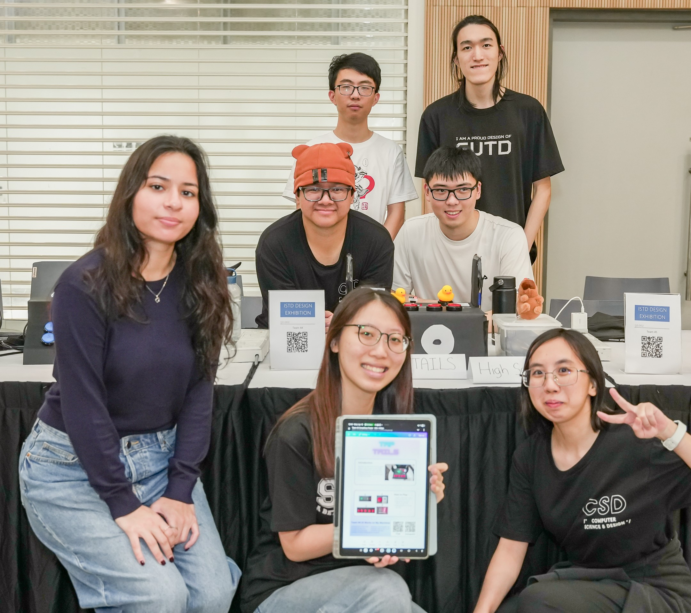
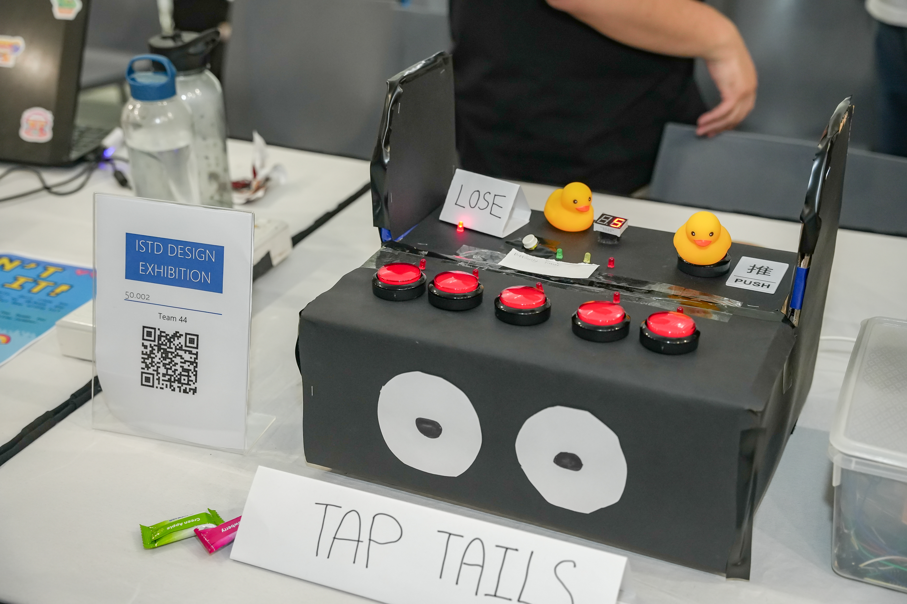
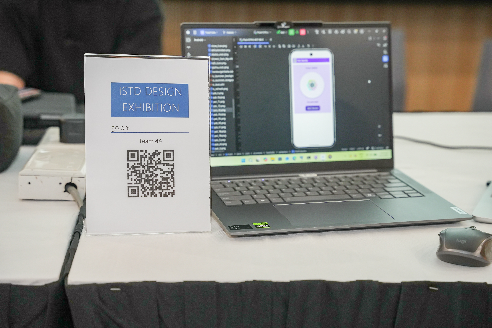

Projects
Related to Computer Science including Cybersecurity
The journey continues...
Still building & updating. (૭ ｡•̀ ᵕ •́｡ )૭
2026
Tap Tails (Physical Arcade Game) & Task Tails (Mobile Application)
Overview
Tap Tails is a memory test game where players must memorise the blinking leds before tapping the correct corresponding buttons to move on to the next level within a time period shown by the timer. The difficulty of the level increases as the sequence to be entered becomes longer. This game is designed using 5 buttons for the player to enter the pattern while the other three buttons will act as a start, reset and difficulty. The 5 red LEDs placed above the 5 pattern buttons will light up one at a time to show the pattern to the player before they can enter. The three LEDs (Green, Yellow and Red) will act as a timer. 1 2 digit 7-segment is to display the score where 1 point is earned for each pattern entered correctly. The enclosure is made using cardboard while the wires are used to connect the electric components. The game will end when the player presses the wrong button or does not finish the sequence before the timer ends
Task Tails is a gamified productivity app and task tracker designed to help its users create and keep useful habits through game-like interactions. The system is developed using Android Studio for the frontend (app), a Spring Boot backend to handle business logic and handle interactions between the frontend and the database, and PostgreSQL for persistent data storage and to allow users to access their data from different devices. We use gamification elements like experience points (XP), levels and points systems to increase player engagement and motivation. Completing assigned user-defined tasks allows them to earn points, which can then be used to buy mystery boxes to gain random unique pets. This helps encourage consistency through reinforcement.
Contribution
Pictures




2024
Team Anonymous
Overview
Portfolio 1 focuses on analysing the “Mother of All Breaches (MOAB)”, a massive cybersecurity incident involving billions of leaked records from multiple platforms and organizations. The project explores the causes of large-scale data breaches, their impact on individuals, governments, and private sectors, as well as preventive and recovery measures used in cybersecurity. Our team researched various security concepts including encryption, access control, incident response planning, patch management, and penetration testing. We also evaluated online breach detection and monitoring tools such as Have I Been Pwned, Aura, Malwarebytes, Keeper, and Cybernews Leak Checker to understand how compromised accounts and leaked credentials can be detected. Additionally, innovative solutions such as AI-powered threat detection systems and layered cybersecurity defenses were proposed to strengthen organizational resilience against future attacks.
Portfolio 2 focuses on digital forensics and malware investigation using an infected Windows 10 virtual machine. The project involved performing RAM and HDD acquisition, malware analysis, forensic investigation, and technical reporting using forensic tools such as FTK Imager, Autopsy, Volatility Workbench, and VirusTotal. Our team extracted memory dumps and virtual disk images from the infected machine before analysing suspicious processes, executable files, memory injections, and hidden malware activity. We implemented Chain of Custody procedures to preserve evidence integrity and used forensic techniques such as process analysis, malware signature detection, hash verification, and memory forensics to investigate potential Trojan and keylogger infections. The investigation also included analysing Windows Defender logs, Event Viewer records, suspicious downloads, and system behaviour to identify how the malware operated and compromised the system.
Contribution
Team Python Project
Overview
Developed a Python-based Parcel Delivery Management System that streamlines customer parcel bookings, billing, and parcel tracking operations through a command-line interface. The system supports user authentication with administrator and operator roles, customer record management, automated bill generation, parcel price calculations based on weight and destination, and parcel tracking by date and zone. Built using Python with JSON-based data storage, the project also implemented input validation, error handling, dictionaries, and file handling to create a more efficient and user-friendly delivery service workflow.